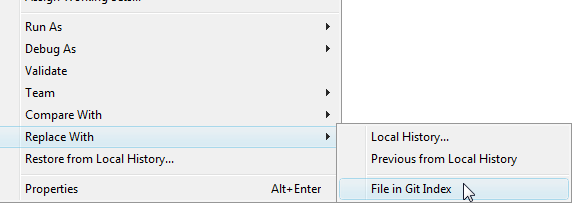

| Reverting Changes | ||
|---|---|---|
|
|
|
|
| Committing Changes | Merge | |
Changes which are not yet committed and not yet staged can be reverted for a set of selected files. Select the file(s) in the Package Explorer or an analogous view and select

This feature is currently not available on single file level. You can use "Reset to" with the option "hard" to set the whole working tree of your repository to the state of the HEAD commit (See "Resetting your current HEAD" below). By this you revert all changes in the working tree and the index. You can't do it on a selected set of files yet.
Git offers the possibility to reset the HEAD of the current branch to any other commit. It optionally resets the index and the working tree to match that commit. Note that this action affects all files and folders in the whole repository.
You have the option to do a hard reset, a mixed reset and a soft reset.
Select "Team -> Reset To..." on a project. This opens a dialog where you can select a branch or a tag.
Select a commit in the History view and open the context menu. Here you find the entries "Hard reset", "Mixed reset" and "Soft reset".
This can be done as a special case of reset. If you reset to the current HEAD (normally the last commit on your branch) with the option "hard" you overwrite the working tree and the index with the content of the HEAD. You can do this in two ways:
|
|

|
|
| Committing Changes | Merge |